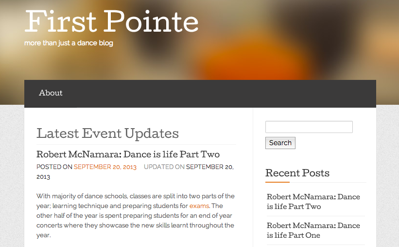

Read First Pointe's blog, click the link below and follow us
First Pointe Blog
Read First Pointe's blog, click the link below and follow us
First Pointe Blog
Robert McNamara: Dance is life
Robert McNamara is the Director of Darebin School of Dance. He was a professional dancer for over 25 years and has been running the northern suburbs school for 21 years...
Read more
Dance just for fun
With child obesity on the rise, parents are encouraged to start good habits of fitness and wellbeing from a young age. Dance (any genre) is a fun and social recreational activity where children can develop new skills and make new friends whilst exercising...
Read more
Australia has cheerleaders?
Cheerleading is one of the newest styles of dance to boom in Australia...
Read more